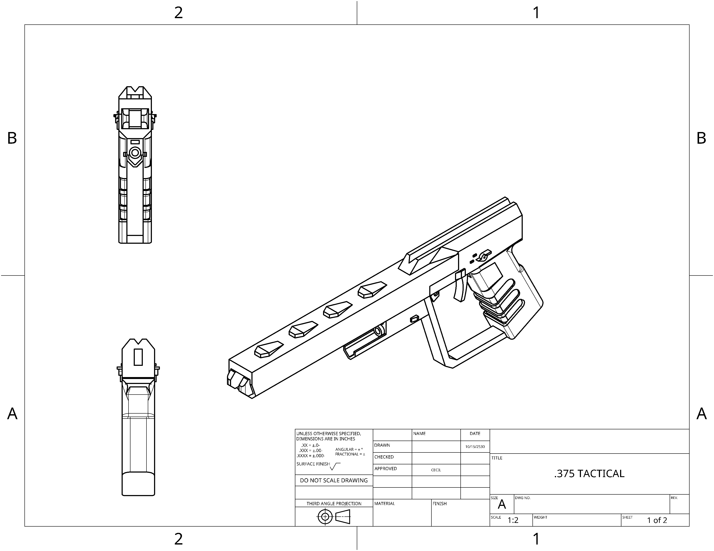
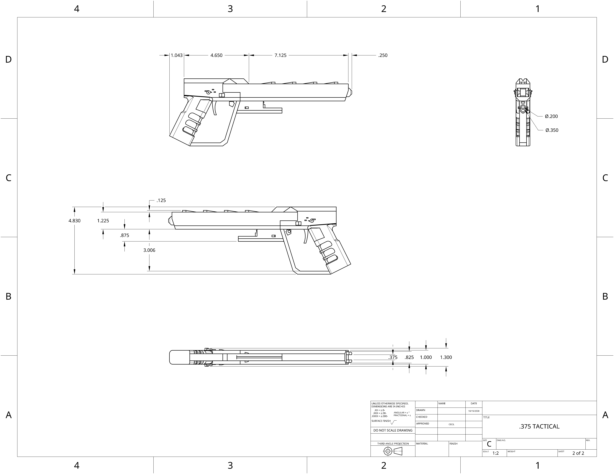

The .375 tactical railgun is a two shot highly portable railgun system designed with the situation of rapid hull depressurization being a tactic in mind.
 | | | | | | |
|---|---|---|
| Damage: | 75 | (Headshot capable) |
| Velocity: | 2000mps | |
| Armor penetration: | 60mm | |
| Rate of fire: | 55rpm | |
| Magazine size: | 2 |